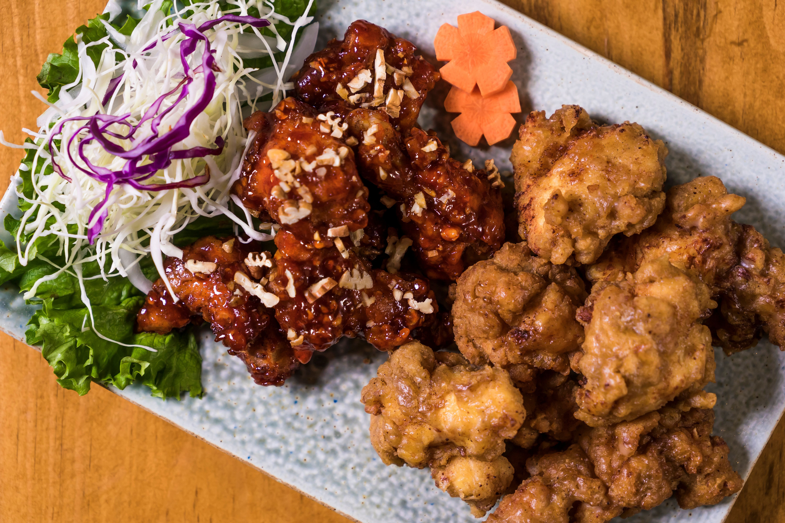

Home
Gyoza

Bite-sized pieces of golden-brown fried chicken with a crsipy, lightly textured coating and juicy interior.
Karaage is a traditional Japanese fried chicken dish marinated in soy sauce, garlic, and ginger before being lightly coated and deep-fried until golden and crispy. It is known for its crunchy, tender and juicy meat, and savory flavor, making it a popular snack or a main dish.
Ingredients
- 1 clove garlic, finely grated
- 1 tablespoon finely grated fresh ginger
- 3 tablespoons soy sauce
- 3 tablespoons sake
- 31 tablespoon mirin
- ⅛ teaspoon sesame oil
- ¼ teaspoon ground black pepper
- 1 pinch cayenne pepper
- ½ teaspoon white sugar
- ¼ teaspoon kosher salt
- ¼ cup soy sauce
- 2 tablespoons rice vinegar
Steps
- Heat sesame oil in a large skillet over medium-high heat. Add cabbage, onion, carrot, and garlic; cook and stir until cabbage is limp, 3 to 4 minutes. Add ground pork and egg; cook and stir until pork is browned and crumbly, 5 to 7 minutes.
- Make the gyoza: Place about 1 tablespoon pork mixture into the center of a wonton wrapper. Fold wrapper in half over filling, then seal the edges with moistened fingers. Repeat to make remaining gyoza.
- Heat vegetable oil in a large skillet over medium-high heat. Cook gyoza in the hot skillet until lightly browned, about 1 minute per side. Add water to the skillet, reduce the heat, cover, and steam gyoza until water is gone. Remove from the heat.
- Mix soy sauce and rice vinegar together in a small bowl. Serve as a dipping sauce with gyoza.